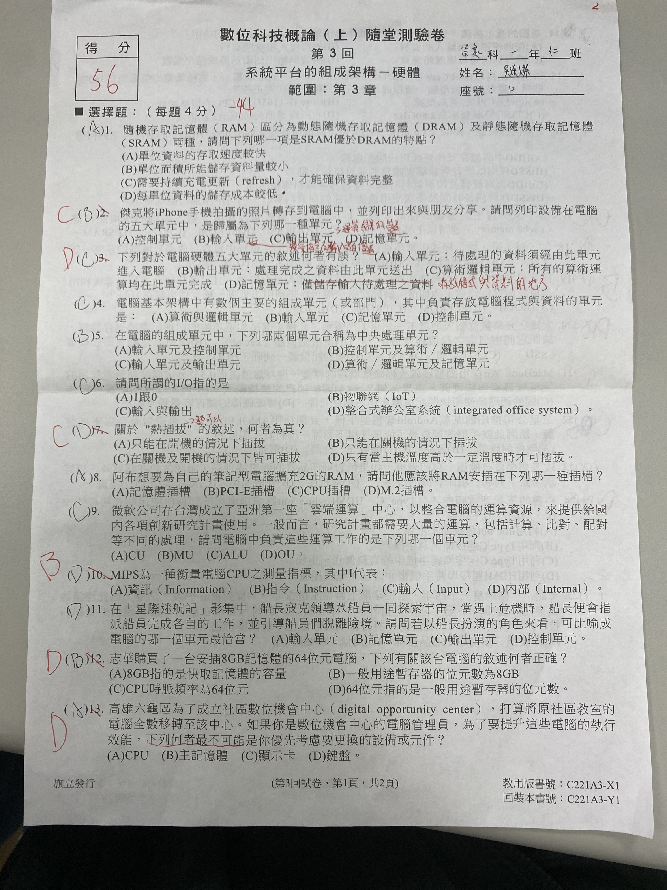

🚀 專屬搶分快速行動
奪回 44 分
原考卷 11 題錯題專攻
針對在隨堂考卷中失分的第 2, 3, 7, 10, 12, 13, 17, 19, 20, 22, 24 題進行專項突破，強化弱點。
25 題全覆蓋
全卷 25 題模擬測驗
完整體驗標準隨堂測驗，提供即時詳解學習與考場計分雙模式，檢視章節總體吸收程度。
重點整理
核心考點講義筆記
精煉整理五大單元、SRAM/DRAM 對比、ROM演進、記憶體速度天梯與周邊連接埠圖表。
考前速記
抽認翻牌記憶卡
3D 翻轉問答卡片，利用問答形式在 3 分鐘內快速重溫高頻考點與秒殺口訣。
🚨 原考卷失分題詳細清單 (共 11 題，失 44 分)
下方標記了您在原始考卷上的作答選項與正確解答。點擊任意一題右側的按鈕即可直接跳轉至該題進行觀念解析與重練！
| 題號 | 核心範疇 | 題目摘要 | 原卷所選 | 正確解答 | 操作 |
|---|
第 1 題
題目載入中...
第 1 / 10 張
點擊卡片可 3D 翻轉
觀念
載入中...
🔄 點擊卡片任何位置翻看解答
解答與考點
載入中...
🔄 再次點擊卡片翻回正面
可即時對照高解析度原始隨堂測驗卷紙本批改與紅筆備註
